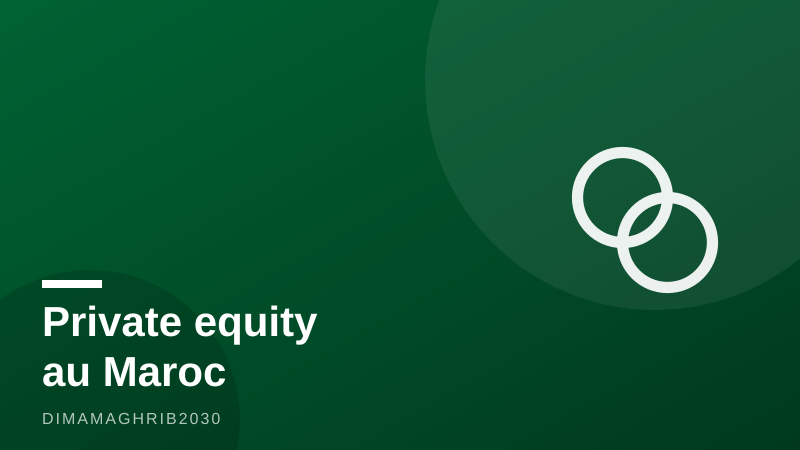

Capital-investissement au Maroc : le record de 6,6 milliards qui change la donne — et le pari du capital 100 % marocainMorocco's Private Equity Boom: Record Fundraising and a Historic Shift to Homegrown Capital

Casablanca, 23 juillet 2026 — Pendant des années, le capital-investissement marocain a vécu sous perfusion étrangère. Les fonds levés à Casablanca dépendaient largement des institutions financières de développement, ces bailleurs internationaux qui dictaient souvent le tempo. Cette époque semble révolue. Les fonds de capital-investissement Maroc 2026 abordent l'année avec un trésor de guerre inédit — et, fait historique, un actionnariat désormais majoritairement marocain.
Les chiffres donnent le vertige. Selon La Vie Éco, les fonds de private equity et de capital-risque marocains ont levé un montant record de 6,6 milliards de dirhams en 2025, contre 4,4 milliards en 2024, soit une progression de 50 % en un an. Cette levée de fonds Maroc record ne sort pas de nulle part : une analyse publiée par Financial Afrik le 8 juillet 2026 rappelle que le cumul des levées sur la période 2020-2025 atteint 20,1 milliards de dirhams, soit quatre fois le cycle précédent 2014-2019.
Le grand basculement du capital
Mais le vrai séisme est ailleurs. D'après le360, les investisseurs marocains fournissent désormais 60 % des fonds levés, contre environ 30 % sur la période 2014-2019. Dans le même temps, la part des institutions financières de développement s'est effondrée, passant d'environ 60 % à 34 %. Autrement dit, l'industrie du private equity Morocco, longtemps arrimée aux capitaux internationaux, se finance aujourd'hui d'abord chez elle : caisses de retraite, assureurs, banques et family offices du Royaume ont pris le relais.
Au cœur de cette recomposition, un acteur s'impose : le Fonds Mohammed VI investissement. Comme le souligne La Nouvelle Tribune, le FM6I structure le marché en jouant le rôle d'investisseur d'ancrage, sécurisant les premiers tours de table et entraînant dans son sillage les institutionnels privés. Un effet de levier public-privé qui rappelle, toutes proportions gardées, le rôle joué par les fonds souverains dans l'émergence des écosystèmes du Golfe.
Des promesses aux déploiements
Reste la question que pose frontalement Financial Afrik : la machine peut-elle tenir la cadence ? Lever des fonds est une chose, les investir intelligemment en est une autre. Selon Finances News Hebdo, les déploiements attendus s'élèvent à 2,1 milliards de dirhams en 2026, puis 2,4 milliards en 2027. Des montants significatifs, mais qui laissent une marge considérable entre le capital promis et le capital effectivement mis au travail dans l'économie réelle.
Le nerf de la guerre sera le pipeline de cibles. Le financement des PME marocaines demeure le débouché naturel de ces véhicules : entreprises familiales en transmission, industriels en quête de mise à niveau, champions régionaux à consolider. Le segment du Morocco venture capital, lui, devra prouver qu'il existe assez de startups matures pour absorber ces tickets, au-delà des quelques pépites qui concentrent l'attention des investisseurs.
Une fenêtre à ne pas manquer
Pour les investisseurs internationaux qui envisagent d'invest in Morocco 2026, le message est double. D'un côté, la souveraineté financière croissante du secteur rassure : un marché capable de mobiliser sa propre épargne institutionnelle est un marché qui croit en lui-même. De l'autre, la baisse relative des bailleurs de développement signifie que le Maroc n'est plus une destination de capitaux concessionnels, mais un marché qui se juge à ses rendements.
La décennie 2020 aura vu le capital-investissement marocain changer d'échelle. La seconde moitié dira s'il a aussi changé de nature : d'une industrie qui lève à une industrie qui transforme. Le record de 6,6 milliards n'est, au fond, qu'une promesse. C'est dans les usines, les scale-ups et les bilans des PME que se jouera sa tenue.
Casablanca, July 23, 2026 — For most of its history, private equity Morocco was an industry built on other people's money. Development finance institutions — the World Bank affiliates and European lenders that seed emerging markets — supplied the bulk of the capital and, often, the strategy. That era appears to be over. Moroccan funds are entering 2026 with record firepower and, for the first time, a majority-Moroccan investor base.
The headline number is striking. According to La Vie Éco, Moroccan private equity and venture capital funds raised a record 6.6 billion dirhams in 2025, up from 4.4 billion in 2024 — a 50 percent jump in a single year. And it caps a remarkable cycle: an analysis published by Financial Afrik on July 8, 2026, notes that cumulative fundraising over 2020-2025 reached 20.1 billion dirhams, four times the total of the previous 2014-2019 cycle.
The quiet revolution: capital comes home
The deeper story is who is writing the checks. As reported by le360, Moroccan investors now supply 60 percent of funds raised, up from roughly 30 percent in the 2014-2019 period, while the share contributed by development finance institutions has fallen from around 60 percent to 34 percent. Pension funds, insurers, banks and family offices in the Kingdom have stepped into the space international lenders once dominated. For an industry long dependent on concessional foreign capital, it is a genuine change of regime.
At the center of the shift sits the Mohammed VI Investment Fund. According to La Nouvelle Tribune, the sovereign vehicle known as FM6I is structuring the market as an anchor investor — committing early to new funds and pulling private institutional money in behind it. It is a playbook familiar from Gulf sovereign funds, adapted to Moroccan scale, and it has become one of the strongest arguments for those weighing whether to invest in Morocco 2026.
Raising money is easy. Deploying it is not.
The Financial Afrik analysis poses the uncomfortable question: can the machine sustain it? Capital raised is not capital deployed. According to Finances News Hebdo, expected deployments stand at 2.1 billion dirhams in 2026 and 2.4 billion in 2027 — meaningful sums, but a fraction of the war chest accumulated since 2020. The gap between committed and invested capital will define the industry's credibility over the next cycle.
The natural outlet is Morocco's mid-market. PME marocaines financement — funding for the Kingdom's small and medium-sized enterprises — remains the sector's core mission: family businesses navigating succession, industrial firms needing upgrades to serve nearshoring supply chains, regional champions ripe for consolidation. The Morocco venture capital segment faces a sharper test: proving there are enough investable startups to absorb larger tickets beyond the handful of names that dominate headlines.
What it signals to the world
For international allocators, the message cuts both ways. A market that mobilizes its own institutional savings — what local commentators are calling the bet on 100 percent Moroccan capital — is a market that believes in itself, and that confidence is bankable. But the retreat of development lenders also means Morocco will increasingly be judged on returns, not development impact. Exits, still the industry's historic weak point, will matter more than ever.
The capital-investissement Maroc 2026 story, then, is one of scale achieved and maturity pending. The 6.6 billion dirham record proves Moroccan capital can be raised at home. The next two years — and those 2.1 and 2.4 billion dirhams waiting to go to work — will show whether it can be put to work as well as it was gathered.